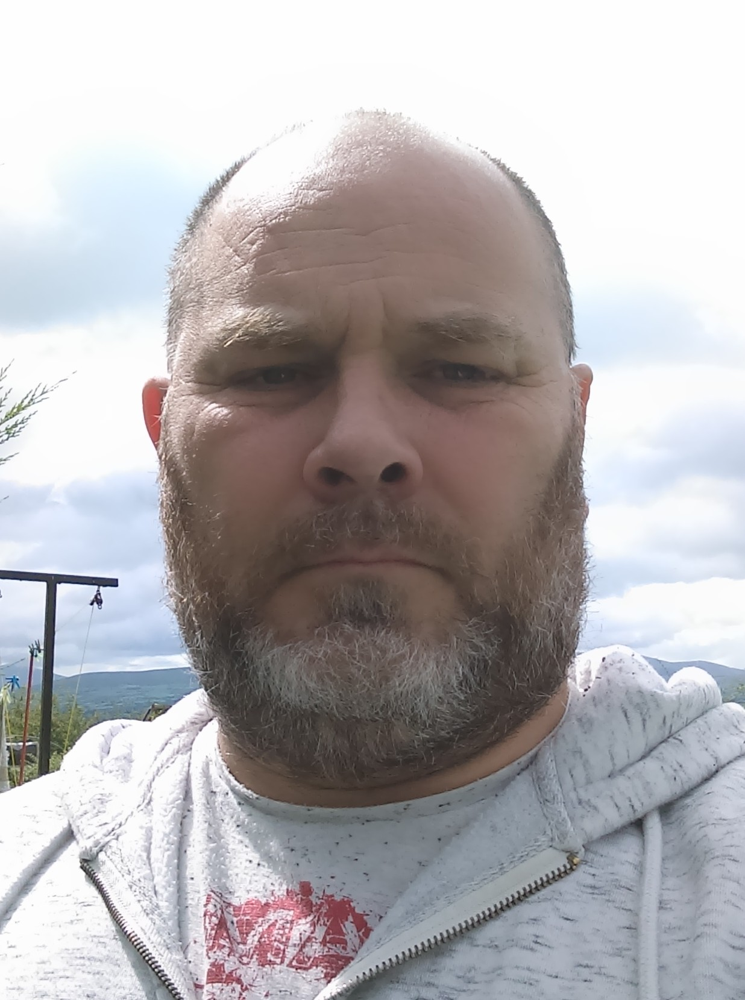
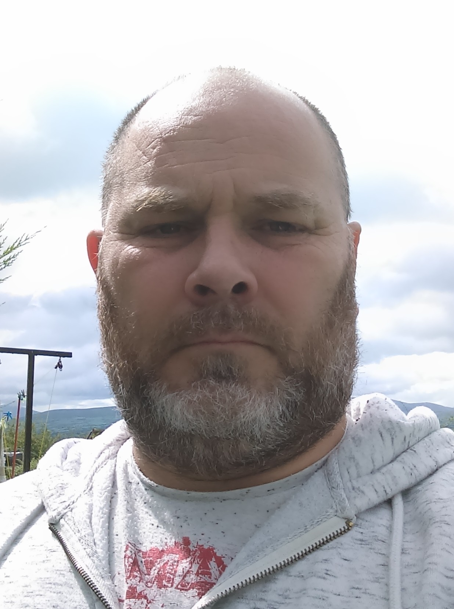
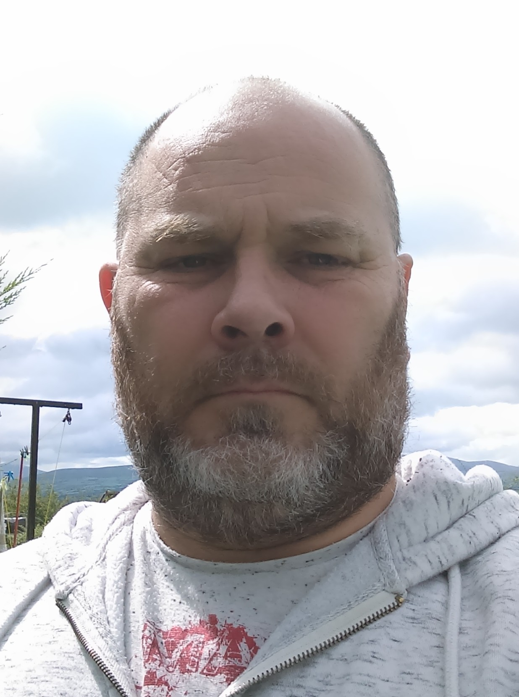
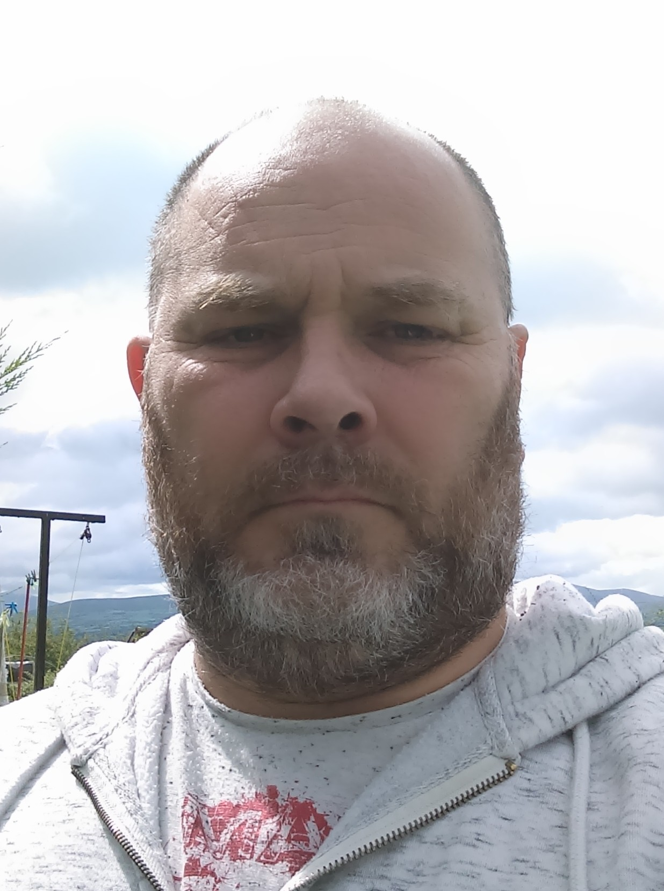

I was born in the Uk back in the 60s and was the first of four children in our family. I went through
schooling and left at the age of sixteen. After leaving school I attended a number of courses. One was at the age of
sixteen I left for the highlands of Scotland (on my own), Attending a course called the "Fort George Volunteers", this was a two week
survival course learning bushcraft and many other skills and activities in the care of the army. This is where I achieved
climbing the UKs highest mountain (Ben Nevis).
The next course at the age of eighteen was a two week course in the Netherlands as part of a team i attended an its a knockout,
competition the towns twinning town of Shrewsbury (Zutphen) with a number of team sports.
At the age of nineteen i got married and had four children with my first wife, we were married for 13 years before divorcing
and that's when i moved to Ireland.
I joined the workforce through a goverment work placement scheme, (YOP) Youth Opportunities Programme.
from hear I secured my first job in the DIY Sector, after a number of years, and different role within the company i left this
company and move into the food retail sector. With this i can say that i have only had two jobs in my entire working carreer.
whilst in these two role i was taught and learnt many life skills which help me greatly through my life.
One other job i had was with the Armed forces. i joined the Territorial Army (TA) and spent 7 years in there, firstly in the mechanical
transport (driver) then transfered to the medical corps as an ambulance driver. All whilst being an Infantry soldier. whilst in
this role i learnt many more skills and disciplines whilst being part of a team.
I have a few hobbies and interests, one of my main ones is Hiking, i have hiked many Mountains in Scotland, England, Wales and now Ireland.
i enjoy the outdoors and find it great for clearing the head. I enjoy hiking solo or with the company of friends, i would also like
sometime to try a little wild camping as this would try some of my old bushcraft skills out again.
I also enjoy online gaming with friends and family, this is a great way to keep in touch with those who are far away and find it relaxing.
Gardening is also a great way for myself to relax and with an acre of land this sometime feels like a fulltime job.